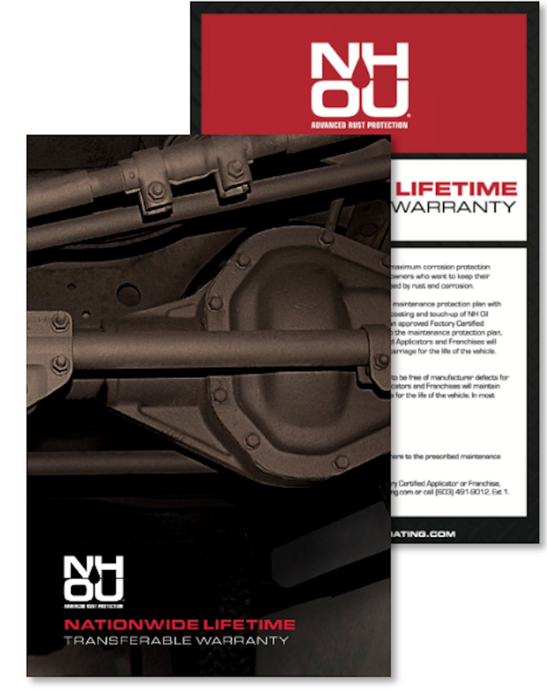

Family OwnedField TestedFuture Focused
NHOU St. Croix Valley
Around here,
we take care of our own.
Road salt is part of life. Give your vehicle another line of defense with professional rust prevention made for the way we drive.
Protection that goes the distance.
See the difference
Before and after
A careful application helps protect exposed metal and hard-to-reach areas from moisture, salt, and seasonal road grime.


Built for the roads we call home.
Rust prevention, explained
Why protect your undercarriage?
Water and road salt collect beneath your vehicle, where corrosion can quietly take hold. An oil-based protectant creeps into seams and cavities, displaces moisture, and helps shield vulnerable metal through every season.
Annual inspections make it easier to spot wear early and keep your protection working as intended.

Common questions
Why choose NHOU St. Croix Valley?
We're part of NHOU, not just a local applicator. Customer feedback and lessons from applying NHOU products year after year help improve the formulas, application methods, and customer experience.
We're family-owned and locally rooted. Our customers are our neighbors and friends, and we take pride in every job.
We take time to get to know you and your vehicle. Rust protection isn't one-size-fits-all. We'll help you choose services that fit your vehicle, protection goals, and budget.
NHOU has built a loyal following worldwide. We share practical rust-protection information backed by years of real-world experience and work to improve every year.
We do it right. We prep the vehicle, choose the right formulas, reach deep inside the frame, treat hidden cavities and inner panels, and protect vulnerable areas under the hood—not just the parts you can see.
What is creep, and why are NHOU products effective over existing rust?
Creep is a product's ability to move across metal after application. Like a drop of oil spreading across paper, it helps the product travel beyond where it was sprayed and reach seams, folds, and other hard-to-access areas.
Wicking ability describes how NH Oil, while soft and active, can migrate into surface rust, displace moisture, and block oxygen from reaching the metal. This movement is especially important on rustier vehicles. Softer products offer more creep and self-healing; harder, more durable coatings move less once applied and depend more on complete initial coverage. We assess each vehicle to match the product to its condition.
Protection that goes the distance.
Long-term protection
Meet Boss Wax Hybrid.
For vehicles with little to no rust, Boss Wax Hybrid cures into a durable, semi-permanent protective coating. Clear NH Oil is also applied to cavities for added coverage.
It includes a lifetime transferable warranty, with required cavity-oil service and inspection every two years.
Explore Boss Wax Hybrid
A little prevention goes a long way.
Don't just take our word for it
Check out our Reviews
“The whole team was very responsive and provided all around great service. I would recommend NHOU St. Croix Valley to anyone looking to get their vehicle undercoated.”
Amanda
Check out our other reviews“Overall wonderful people that show a lot of pride in what they do. I plan on returning every August, with whatever my fleet may contain at the time.”
Scott
Protection that goes the distance.